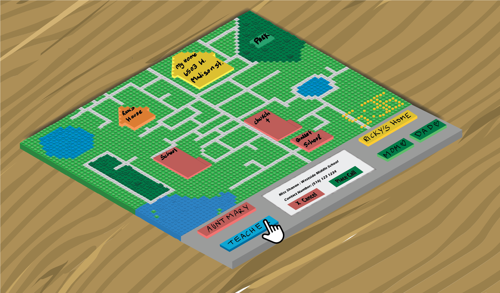
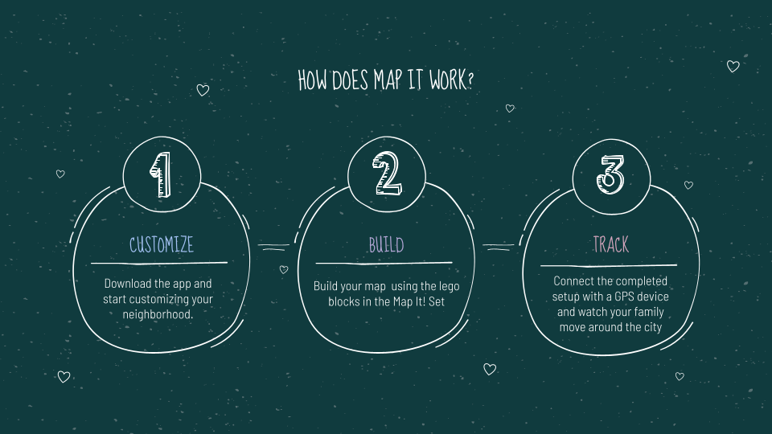
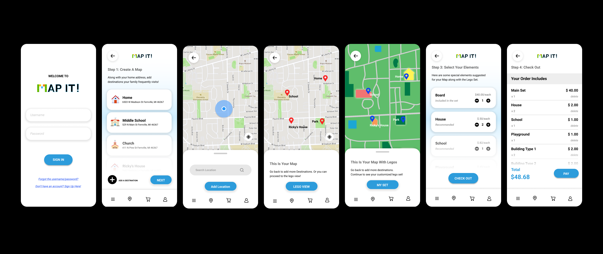
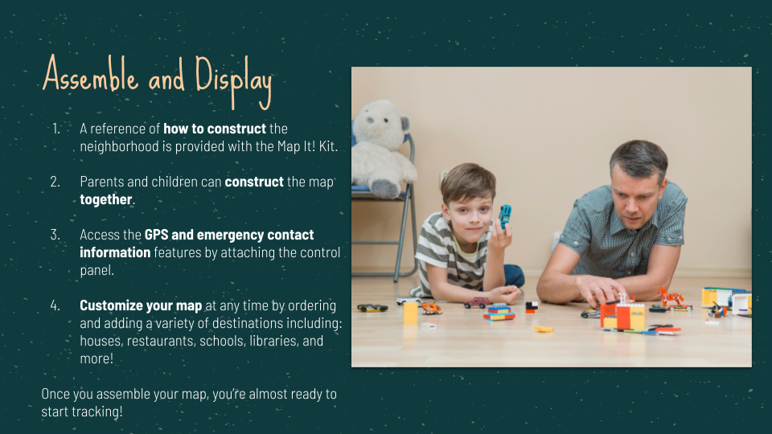
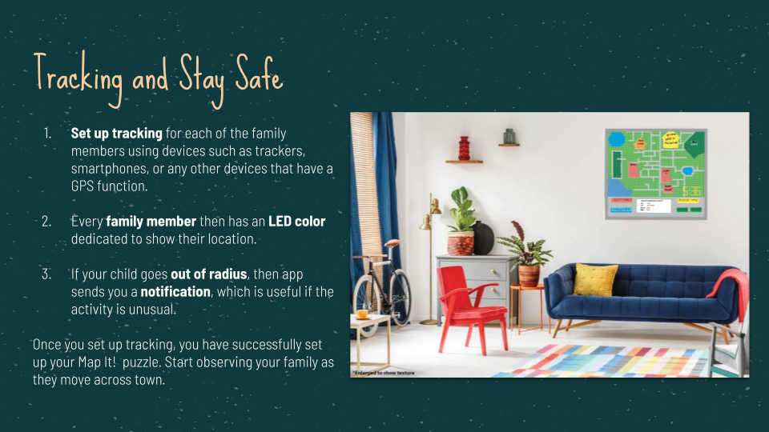

Map It! is a physical, interactive puzzle that allows families to build a map of their everyday locations and track each other's whereabouts. Designed at the University of Michigan Makeathon 2021, Map It! combines the tactile joy of Lego-style building with GPS-based location tracking to create a product that is both educational and safety-focused.

Map It! — Physical interactive puzzle with Lego-style neighborhood map
🧩
Physical Puzzle
📱
Companion App
📍
GPS Tracking
👨👩👧
Family-Focused
How Does Map It Work?
01 · Overview
Customize — Download the app and start customizing your neighborhood.
Build — Build your map using the Lego blocks in the Map It! set.
Track — Connect the completed setup with a GPS device and watch your family move around the city.

Three Steps — Customize · Build · Track
Create Your Set
02 · App Flow
The companion app guides users through setting up their Map It! puzzle in three easy steps:
Download the app and start adding your frequently visited locations to begin building your map.
Once you've added all of your locations, check out your Lego view. Each item you select will be added to your cart.
When you're happy with how your Lego view looks, review your cart and checkout.
We'll send you all the necessary pieces to begin building your map.

Create Your Set — App walkthrough with three easy steps
Assemble and Display
03 · Physical Build
A reference of how to construct the neighborhood is provided with the Map It! Kit.
Parents and children can construct the map together.
Access the GPS and emergency contact information features by attaching the control panel.
Customize your map at any time by ordering and adding a variety of destinations including: houses, restaurants, schools, libraries, and more!

Assemble and Display — Parents and children building the puzzle together
Design Rationale
By making the assembly a shared activity, Map It! becomes more than a tracking device — it's a family bonding experience that teaches children spatial awareness while giving parents peace of mind.
Map It! Puzzle Prototype — Physical Build Demo
Tracking and Stay Safe
04 · Safety
Set up tracking for each family member using devices such as trackers, smartphones, or any other GPS-enabled devices.
Every family member then has an LED color dedicated to show their location on the physical map.
If your child goes out of radius, the app sends you a notification, which is useful for detecting unusual activity.

Tracking and Stay Safe — Map It! puzzle displayed on wall with live GPS tracking
Why is Map It! Helpful?
05 · Impact
Family bonding — Map It! is a fun way for families to work together to build a puzzle. Children can map out their communities and get a better understanding of their neighborhood.
Spatial awareness — Kids start developing spatial awareness at the age of 18 months. This skill is developed by learning locations, measuring distances, puzzle solving, and Lego activities.
Child safety — Tracking children in common locations can ensure their safety. The FBI states that over 400,000 children are reported missing every year.
Target Audience
06 · Users
Children (Ages 2–10)
The primary audience — they are developing skills of reading, comprehending objects and shapes, and understanding their surroundings. Map It! supports cognitive development through hands-on building and spatial exploration.
Parents
The secondary audience — along with acting as a teaching tool, the device connects to their phone, allowing parents to ensure their kids get home safe from school and other events.